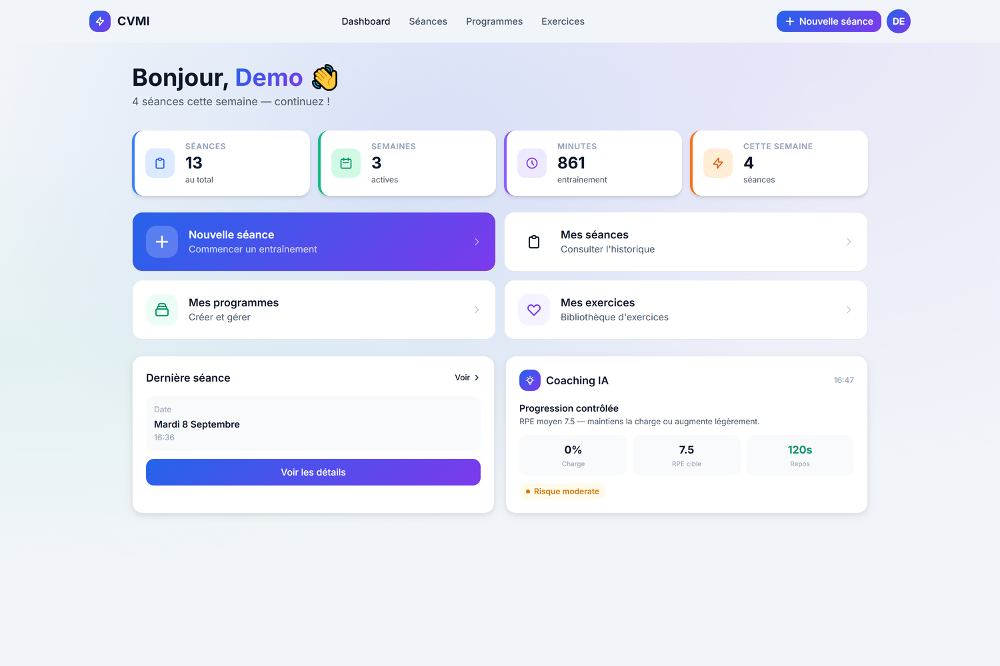
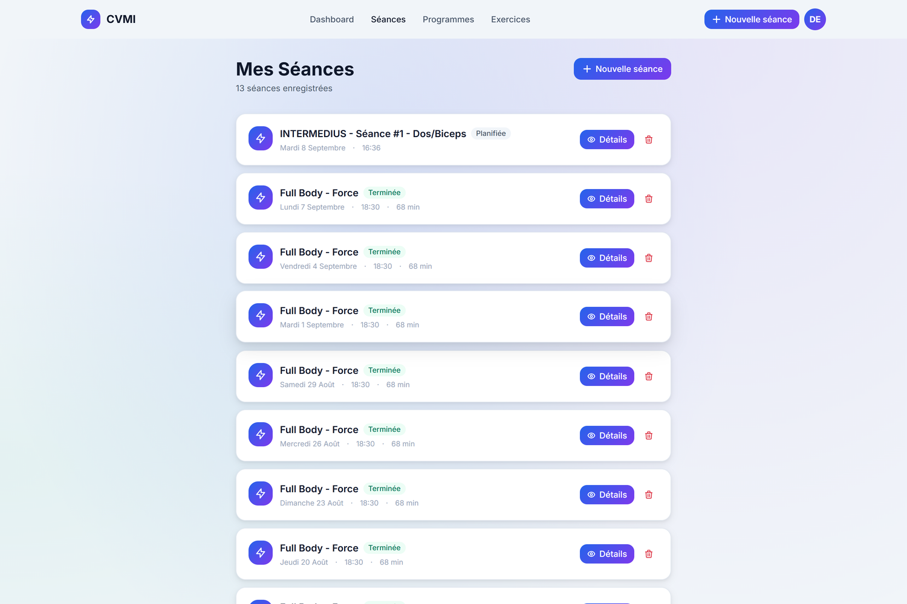
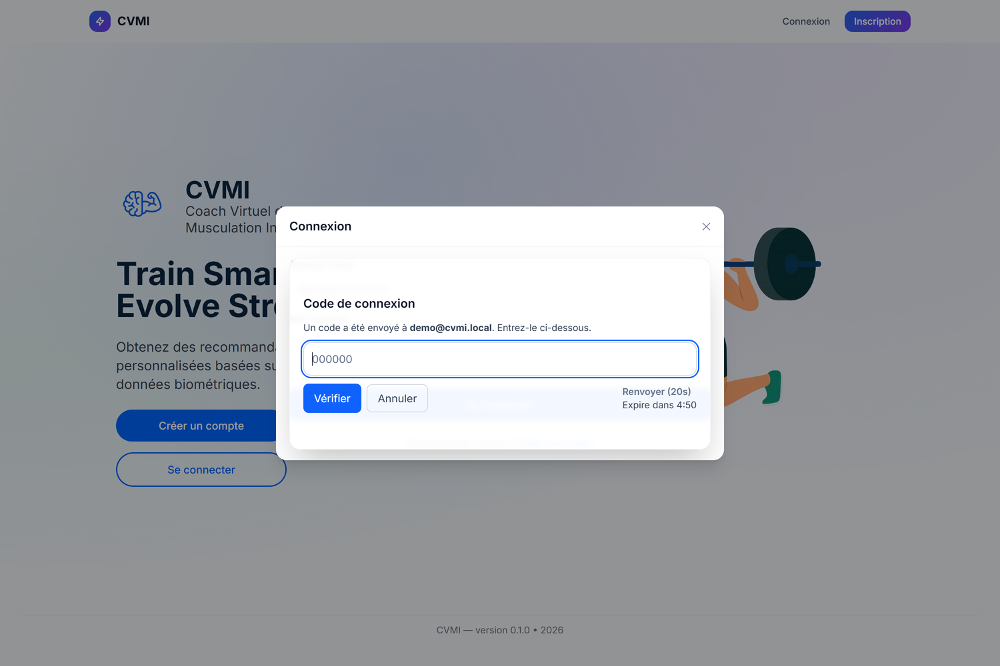

CVMI — Coach Virtuel de Musculation Intelligent
Une application web et mobile qui mesure les séances d'entraînement et recommande
des charges. Je l'ai menée seul de bout en bout, de la veille technologique et du
cahier des charges jusqu'au déploiement. C'est le projet sur lequel j'ai le plus appris,
parce que rien n'y était déjà décidé.
Ce que j'ai construit
Un back-end NestJS découpé en modules métier — exercices, muscles, programmes, séances,
performances — sur PostgreSQL avec TypeORM et des migrations versionnées. Les
recommandations de charge ne passent pas par un service externe : elles tournent en local
sur un modèle au format ONNX, exécuté côté serveur avec ONNX Runtime.
Le front est en Next.js, packagé pour iOS et Android avec Capacitor. Une seule base de
code sert donc le web et le mobile, ce qui était le but : je voulais éviter de maintenir
deux applications séparées pour un projet mené seul.

Le panneau « Coaching IA », en bas à droite, est la sortie du modèle : charge à
ajuster, RPE cible, temps de repos et niveau de risque.

L'authentification, en détail
C'est la partie dont je suis le plus satisfait, parce que c'est celle où une erreur coûte
le plus cher. Les mots de passe sont hachés avec Argon2. Les jetons JWT sont émis par
paire, un access et un refresh, et le refresh est lui aussi stocké haché en base puis
rotaté à chaque usage : un jeton volé ne sert qu'une fois.
La vérification d'e-mail est obligatoire avant le premier accès, la politique de mot de
passe impose douze caractères avec majuscule, minuscule, chiffre et caractère spécial —
validée en direct dans le formulaire — et le lien de réinitialisation expire au bout de
trente minutes. Les origines autorisées en CORS sont déclarées explicitement, jamais
ouvertes par défaut.
Quatre garde-fous que j'ai ajoutés parce qu'ils manquaient : une double authentification
par code envoyé par e-mail à la connexion, un CAPTCHA à l'inscription pour bloquer les
créations automatisées, un historique des mots de passe pour empêcher la réutilisation
d'un ancien, et une question de sécurité pour la récupération de compte.

Les sessions, appareil par appareil
Chaque connexion crée une session rattachée à un appareil. Le serveur en déduit le type
de matériel, le navigateur et le système d'exploitation, et les conserve avec l'adresse
IP et la date. L'utilisateur voit donc la liste de ses sessions ouvertes et peut en
révoquer une à distance, sans toucher aux autres. C'est ce qu'on attend quand on s'est
connecté depuis un téléphone prêté ou un poste partagé.
Le mode hors ligne
C'est la contrainte qui a le plus façonné l'application : dans une salle de sport, le
réseau est souvent mauvais, et on ne peut pas demander à quelqu'un d'attendre le wifi
pour noter une série. L'application est donc une PWA installable qui fonctionne sans
connexion.
Un service worker versionné gère quatre caches distincts, séparés selon leur nature :
les ressources statiques, les pages, les réponses d'API et les images. Les données de
l'utilisateur sont stockées en IndexedDB, et les modifications faites hors ligne partent
dans une file de synchronisation qui les rejoue dès que le réseau revient. Un indicateur
affiche en permanence l'état de la connexion et le nombre d'opérations en attente.
Mise en production
L'ensemble tourne sous Docker Compose : l'API, la base, Nginx qui sert le front et
proxifie l'API, et le tunnel qui expose le service. L'intégration continue est sur
GitHub Actions, avec un pipeline de build et un pipeline de déploiement séparés, et
SonarQube surveille la qualité du code. En développement, un serveur SMTP local intercepte
les e-mails pour tester le parcours d'inscription sans rien envoyer à l'extérieur.
Outils utilisés
NestJS, TypeORM, PostgreSQL, Next.js, Capacitor, TanStack Query, ONNX Runtime, Argon2,
Docker Compose, Nginx, GitHub Actions, SonarQube.